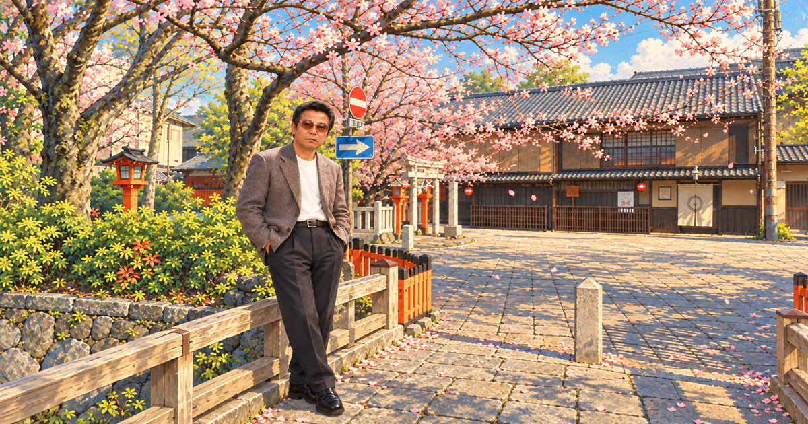

第1ページ／全3ページ
寺田通雄という男の生涯
京都・祇園に生まれ、自分らしく生きた親友の記録

はじめに｜忘れられない親友
京都市東山区、祇園。この街に生まれ育った寺田通雄君は、小学校5年生の頃からの私の親友です。お前がこの世を去ってから、30数年。私は80歳になった今も、ふとした瞬間にお前へ話しかけている自分に気づきます。
「寺田、お前ならどう思う？」
返事は聞こえなくても、共に歩んだ時間は、今も私の中に生き続けています。この3ページは、寺田という一人の男の生きた証しと、長く続いた友情を残すための記録です。
第1章｜祇園に生まれた少年
寺田が生まれ育ったのは、京都の歴史と暮らしが息づく祇園界隈。通った学校は京都市立有済小学校、そして京都市立弥栄中学校でした。私たちが知り合ったのは小学校5年生の頃です。あの日の出会いが、成人してからも協力し合う、長い友情につながるとは、当時は思いもしなかったでしょう。
第2章｜人一倍、個性あふれる男
寺田は、誰かと同じ型には収まらない、個性あふれる男でした。中学2年生の頃には、やんちゃで「不良」と呼びたくなるような時期もありました。でも私は、歌うことが大好きで、根は本当に明るい寺田の姿を知っていました。外から見える振る舞いだけでは測れない、その人らしさがある。私にとって、寺田の個性は理解したいものであり、忘れられない魅力でもありました。
第3章｜家族とともに歩んだ日々
大人になった寺田は、奥さんと一人の息子さんと家庭を築きました。少年だった私たちが、それぞれ家族を持ち、責任を背負って生きる年齢になったのです。家庭で過ごした詳しい日々を、私は勝手に語ることはできません。それでも、家族とともに人生を歩んだことは、寺田の大切な足跡として残しておきたいと思います。
第4章｜波乱万丈、それでも寺田は寺田
お前の人生は、決して平穏なことばかりではなかったな。波乱万丈という言葉が、これほど似合う友も少ないかもしれません。何があっても、私にとってお前は小学校時代から知る寺田でした。成人後も長く協力し合い、人生のさまざまな場面を共にしてくれた。そのありがたさを、年月がたつほど強く感じています。
第5章｜日本の文化や風習を未来へ
寺田とは、日本の優れた文化や風習を後世に残したい、という話をしてきました。祇園の街に息づく伝統、暮らしの中の礼儀や季節の行事。時代が変わっても、先人の知恵や人を大切にする心は、次の世代に伝えていきたい。お前が大切にしたその思いを、この記録とともに残します。
結び｜寺田、ありがとう
私は今、80歳です。数多くの出会いを重ねてきましたが、寺田通雄君の個性あふれる性格を、私はいつも理解していたつもりです。
「私の人生に寄り添ってくれたこと、決して忘れない。感謝している。」
寺田、お前と出会えて本当に良かった。